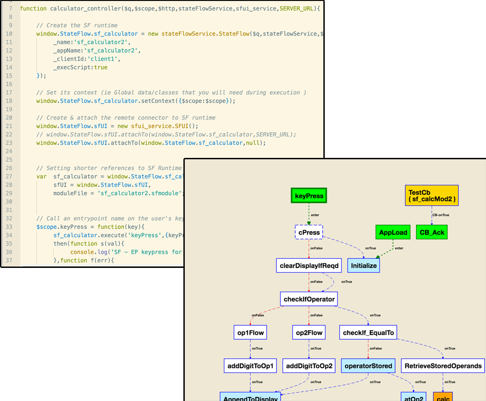
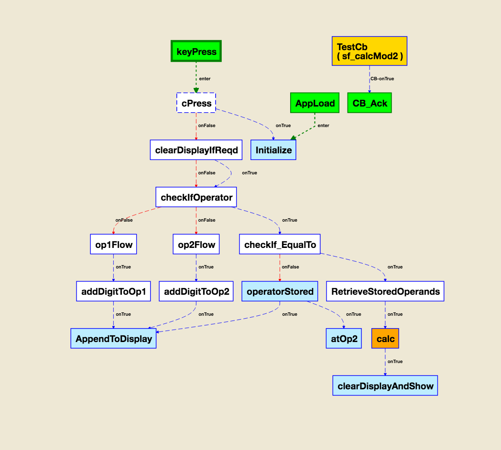
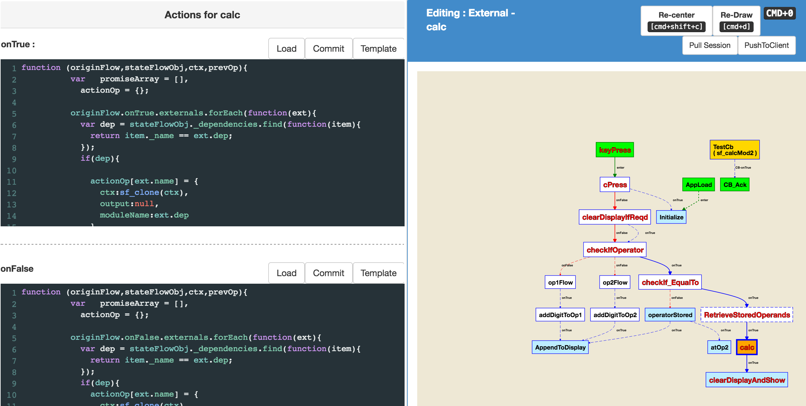
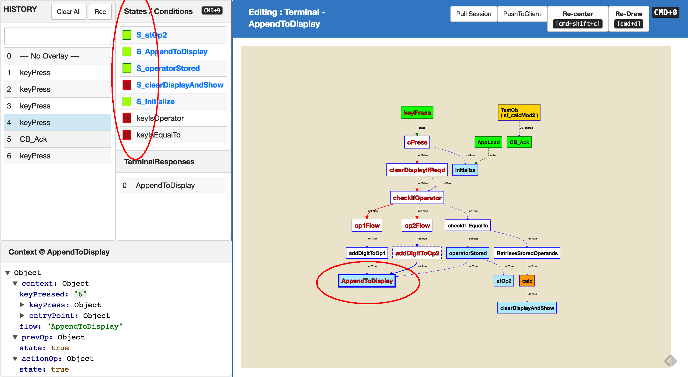
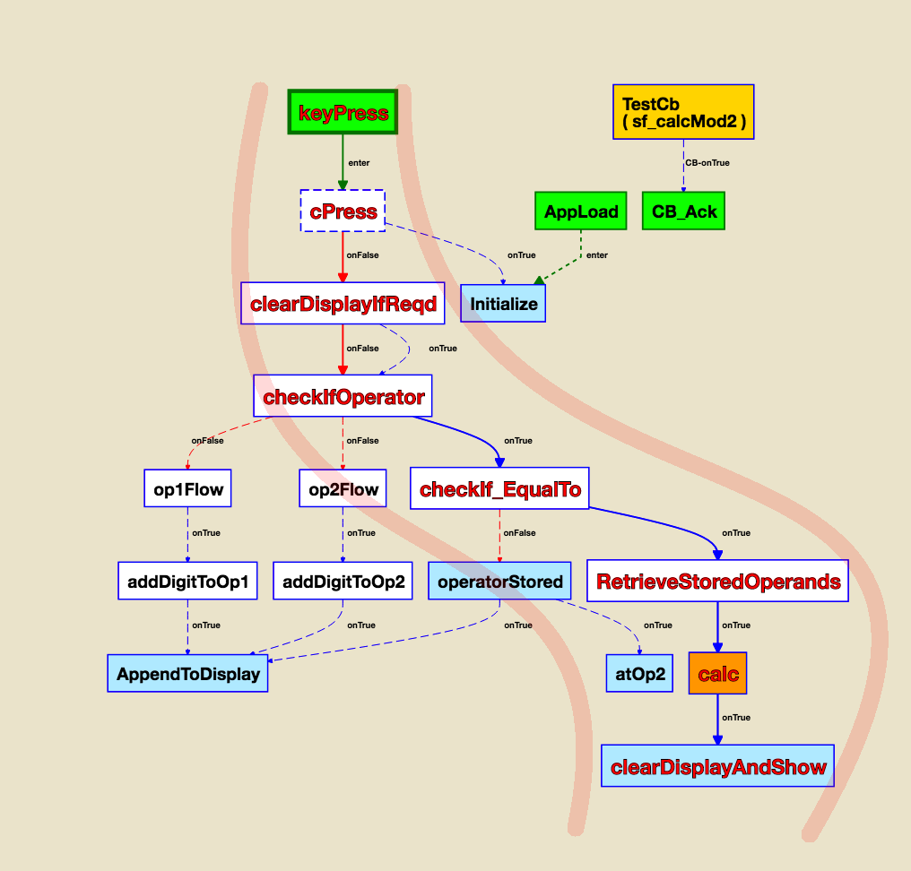

The Problem
So YOU, a talented JS dev,
just bull-dozed through 10,000 lines of code text
an experience as enjoyable, as having all your hair pulled out, one by one
Spent hours,
mentally constructing a flowchart from it,
wasted several more,
beating the massive mental fatigue
( that set in because of
deconstructing so much code,
line-by-line, function-by-function )
in order to understand the code's execution
just to be able to collaborate
with your project team !
And then, you've to redo it
all over again, for the next project !
with another 10,000+ lines of code,
and more bull-dozing
and more spending / wasting time and energy
And the next... and another...
and so on !
Sound familiar ?
frustrating & in-efficent perhaps ?
The problem statement
Humans think visually, not in text.
So code, being text, isn't intuitive.
Manually decoding text based code into a visual mental map,
is time consuming and taxing,
but still a required activity for every member on a project,
thus, leading to bugs & less efficient turnaround times
The Solution
What if
you never needed to build mental maps from code,
in the first place ?
St8Flo.js
Text is for machines | Visual, is for humans
Your app's flowchart, itself becomes the app !
Understand & design your code's structure visually
Edit the flowchart directly to change the app's behaviour.
No more need to decode and undertand heaps of text


Understand code better
with less errors
Most slowdowns and errors happen when you attempt to create / edit / debug code, without realising that you've missed out on some important implementation details.
St8Flo helps, by keeping things as visual as possible.
Collaborate & share work more intuitively, even across teams with varied skillsets
Software is often designed by teams, than a single developer.
St8Flo is highly modular and makes no assumptions about your code's granularity, leaving you in complete control of how it is split across dev teams, whether brainstorming the flow chart or coding in the individual functions.
The intuitive visual diagrams also allow your teams to easily understand and develop upon each other's contributions


Rapid prototyping
& build as you brainstorm
Visually create / edit your app's flowchart
to modify the structure & behaviour of the app,
on the fly !!
Visually understand & design
app states / flow control


Isolate and debug errors, in a snap
using visual execution traces
See a visual trace of your app's execution flow on the flowchart, as it happens & quickly identify where it went wrong
One click deployment
whether to client's device, or a test
No need to update via app stores either,
( beyond the initial install )